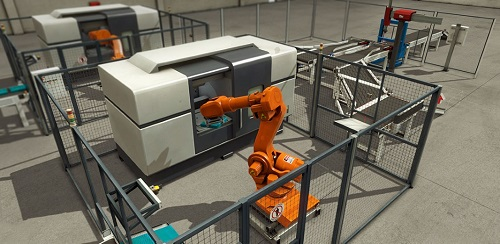

Post #1
Engenheiro Industrial com MBA em Gestão Empresarial pela Fundação Getúlio Vargas. Perfil no Linkedin Experiência em processos industriais, gerenciando equipes de coordenadores e supervisores, nas atividades de engenharia, produção, qualidade, suprimentos, desenvolvimento de produtos, ferramentaria e manutenção; Responsável pela modificação e desenvolvimento de novas linhas de produtos desde o planejamento, pesquisa, supervisão dos projetos, implantação de novos métodos e processos, definição de todas as inspeções e testes, elaboração de relatórios e documentos de desenvolvimento, treinamento e qualificação das equipes envolvidas. Experiência com produtos com certificação compulsória. Participei da Comissão de Estudo Especial de Aparelhos para Melhoria da Qualidade da Água para Consumo Humano desde 2000 na elaboração das primeiras normas até as ABNT NBR14908, NBR15176, NBR16098 e suas revisões até 2015. Experiência na função de Gerente da Qualidade, na qual trabalhei durante um grande período no gerenciamento do sistema da qualidade ISO 9001, certificado pela empresa SGS. Também participei na implantação e certificação do sistema da qualidade ISO 9001 junto a empresa SGS. Experiência com a supervisão da produção, PCP e sistema de controle da produção. Experiência com moldes de injeção, ferramentaria, materiais e resinas plásticas. Experiência com processos de tratamento de água como filtração, microfiltração, osmose reversa, processos químicos, desinfecção da água por radiação U.V, etc. Experiência com a certificação compulsória de produto junto a laboratórios credenciados, ABNT e INMETRO. Participei da Comissão de Estudo Especial de Aparelhos para Melhoria da Qualidade da Água para Consumo Humano na elaboração das Normas NBR14908, NBR15176 e suas revisões até 2015. Experiência na função de Gerente de manutenção corretiva e preventiva. Inglês avançado. Contato!